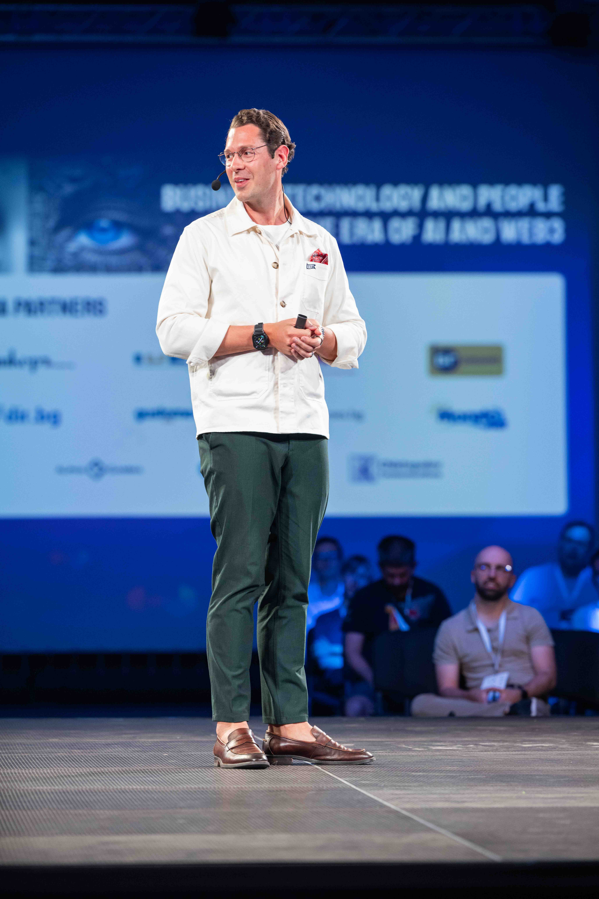

DIRECT AI TRAINING FOR C-LEVEL EXECUTIVES
Casper works 1-on-1 with a small number of C-level executives each quarter. No packages, no templates, no group sessions. Every engagement is built from scratch around the specific decisions, habits and workflows that matter most in your role.
Book a discovery callNOT A WORKSHOP BUT A WORKING PARTNERSHIP.
Most AI programmes deliver information. This delivers change. Here is what every direct engagement with Casper is built around.
Context, not curriculum
Before anything is designed, Casper maps exactly where you are today: what is working, where the real gaps are, and what the highest-value next moves look like for your specific role and organisation. There is no standard agenda. Everything is built for you.
Outputs, not inspiration
Every session produces something tangible. Documented workflows, standardised processes, a prioritised use case roadmap, a written action plan. You leave with assets you can put to work immediately, not slides that gather dust.
Change that sticks
A single session does not change how a C-level executive leads. Casper builds follow-up, accountability and habit formation into every engagement from day one. The goal is a measurable, permanent shift in how you operate, not a good day out of the office.
CASPER WORKS WITH A VERY SMALL NUMBER OF EXECUTIVES EACH QUARTER.
Direct engagements are limited by design. This is for C-level executives who are past the point of wondering whether AI is relevant and are ready to do the actual work.
- C-level executives who want hands-on implementation, not another overview of what AI could theoretically do
- C-level executives who need to demonstrate clear, measurable AI ROI to a board or ownership group
- C-level executives preparing to standardise AI across their function or leadership team
- C-level executives who have invested in AI before and seen nothing lasting come from it
- Senior leaders who need a trusted, confidential thought partner at the very top level of AI strategy

FROM DISCOVERY CALL TO REAL RESULTS.
Five steps. No wasted time, no unnecessary complexity.
Introductory call
A direct 30-minute conversation. Casper understands where you are with AI today, what you are trying to achieve and over what timeframe. No pitch. An honest conversation about whether there is a fit.
Proposal and scope
If there is a clear fit, Casper sends a tailored proposal. Recommended format, agenda outline, timeline and investment. Built for your situation. No templated packages.
Preparation
Before the session, Casper reviews your current tools, processes and context. You receive any pre-work needed to extract maximum value from the time together.
Working session
The engagement itself. Custom, hands-on and built around your real challenges. You leave with documented outputs you can put to work immediately, not notes that get filed away.
Action plan and follow-up
A written action plan is delivered within 48 hours. Casper checks in 30 days later to review progress, remove blockers and answer any questions that have come up in practice.
A DIRECT CONVERSATION. NO PITCH.
Casper speaks personally with C-level executives to find out whether there is a genuine fit. Here is exactly what the 30 minutes covers.
Where you are today
What have you tried with AI? What has stuck, and what has not? Where is the real gap between where you are now as a leader and where you need to be?
Your goals and timeline
What does success look like for you, and by when? Getting this clear is what determines whether any engagement, and which type, actually makes sense for your situation.
Whether there is a fit
Casper takes a limited number of direct engagements each quarter. If there is a clear fit, the right next step will be obvious. If there is not, Casper will say so directly and may point you toward something better suited to where you are.
What this call is not
There is no sales process. No proposal sent afterward unless both parties agree it makes sense. No pressure to commit to anything. The only outcome of this call is either a clear, mutually agreed next step, or a clear no. Either way, your time is respected.
Duration: 30 minutes
Format: Video call
Cost: No charge
PICK A TIME. CASPER WILL BE THERE.
Select a date and time below. A confirmation with everything you need lands in your inbox immediately.
Book a discovery call